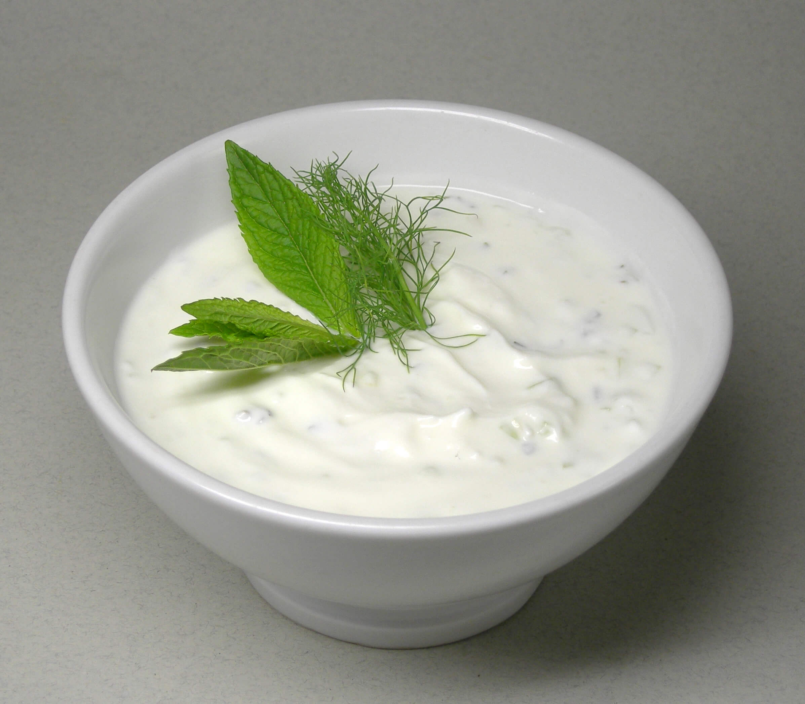

Yemek Tariflerine Hoş Geldiniz
Anasayfa
Çorbalar
Ana Yemekler
Salatalar
Mezeler

Cacık Salatası
Malzemeler
- 2 su bardağı süzme yoğurt (veya normal yoğurt)
- 2 adet salatalık
- 2 diş sarımsak
- 1 yemek kaşığı zeytinyağı
- 1 tatlı kaşığı kuru nane
- Birkaç dal taze dereotu veya maydanoz (isteğe bağlı)
- Yarım çay bardağı soğuk su (kıvam için, isteğe bağlı)
- Tuz
Yapılışı
-
Salatalıkları haşlayın: Salatalıkları iyice yıkayın, kabuklarını soyun
(isteğe bağlı) ve rendeleyin.
-
Yoğurdu karıştırın: Yoğurdu derin bir kaba alın. Kıvamı çok koyu ise biraz soğuk su ekleyip
çırpın.
-
Sarımsak ekleyin: ZSarımsakları ezip yoğurdun içine katın.
-
Malzemeleri birleştirin: Rendelenmiş salatalıkları, tuzu, ince doğranmış dereotu veya maydanozu
ekleyin.
-
Son dokunuş: Zeytinyağını ve kuru naneyi üzerine gezdirin.
-
Servis edin: İsterseniz soğuk olarak küçük kaselerde, üzerine buz parçalarıyla da servis
edebilirsiniz.
👉 Not: Cacık, yaz aylarında serinletici bir salata/meze olarak sofraların vazgeçilmezidir.